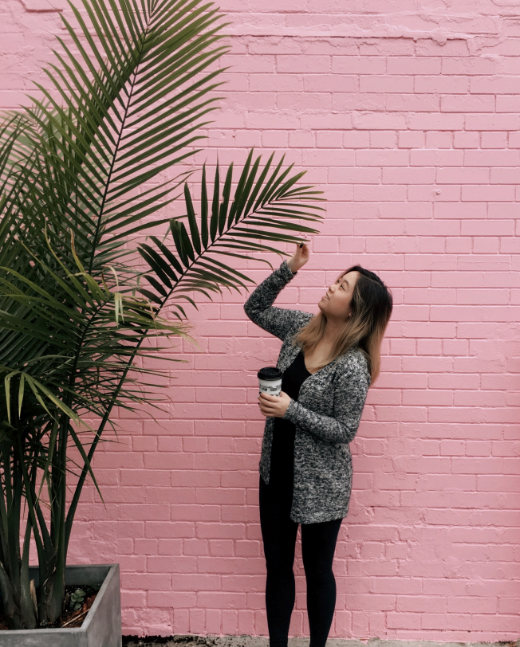

JESSICA T.
ABOUT
WORK
CONTACT
Hello üëã I'm Jessica
I'm an entrepreneur turned UX Designer who is passionate about
creating simple yet innovative experiences for users.
Let's Chat!

My Work
Back
DINNR
FIND DATES, NOT JUST MATCHES

MY ROLE
•
UX Designer in collaboration with Amy Zhou and Karman Li
TIMELINE
•
May - July 2021 (12 weeks)
PROBLEM
Dating app users are frustrated from dead end conversations that don’t
lead to in-person dates. 
Growing up in the digital age, dating apps are very common yet there’s
still stigma around the dangers of meeting online people in real life.
Many users find that conversations lead nowhere when a physical date
isn’t initiated. 
THE SOLUTION
Incorporate restaurant booking and dinner date invitation into the app
as a core task.
1
Invite and Schedule Dinner Dates
•
Increases your change of meeting your matches face-to-face
•
Provide less friction to initiate dinner date when on the same
platform
•
Connect through interest in food

2
Creating Trust on the Platform
•
More extensive profile creation process
•
ID verification when onboarding platform
3
Partnership with Restaurants
•
Simplify booking process
•
Track, manage and reminders for dates
•
Incentivize dinner dates with deals from paid restaurant
partners
COMPETITIVE ANALYSIS
The competition has no incentive for in real life meet up
During the research phase of this project, I conducted a competitor
analysis of other websites/apps that have similar interfaces to DINNR. I
analyzed the 4 most populat dating apps. I found that none of these apps
included meeting up as a core task. This then became my opportunity for
the solution.

HINGE
Hinge is a social discovery app, connecting users with friends of
friends from Facebook. It's a dating app with a purposefully limited
pool of potential matches for each user. Your potential matches will
know someone that you are friends with on Facebook. Hinge is
targeting people looking for a serious relationship.
TINDER
Tinder is an online dating and networking app. Users can like or
dislike profiles by simply swiping left or right. Profiles include a
short bio, interests and a few photos. Users can only start
connecting if both users match. Tinder has a looser filter system
and is targeting people looking to explore and connect.
OKCUPID
OKCupid generates matches by applying data generated by users'
activities. When answering questions users choose their answers, the
answer they would accept from a partner and level of importance of
that question. OKCupid then uses an algorithm to calculate and
present potential matches.

MATCH.COM
Match.com is a dating website where users create a profile and start
connecting with others. The profiles are more extensive compared to
other dating apps so its great for screening before committing to
conversations. The targeting audience for Match.com is more mature
and looking for serious relationships.
USER INTERVIEWS
My interviewees all agree that in person meeting is a critical step
before a successful relationship is formed
Although I saw from my research that in real life meet ups is very
important and a crucial step before relationships are formed, I've
conducted interviews with 20 users between the ages of 20-35. I've asked
them questions below to find trends on why they prefer to meet someone
in real life.
Interview Questions
1. How many people do you end up meeting after matching on previous
dating apps?
2. Out of the people that you meet up with, how many do you continue to
keep in contact?
3. What are you motives for joining a dating app?
4. Which dating app do you use the most?
5. Have you met up with anyone through a dating app?
6. What would make you feel more comfortable to meet up?
7. What would you change about the current dating app you use?
8. What makes you stop using the dating app?
The Main Insight:
My interviewees did not find success in previous dating apps because the
core task of the app was to match you with compatible people but there
were no initiatives for in real life meet ups.
Based on the trends that I found after the interview and surveys, I
found that the majority of successful relationships must have an in real
life component. All of the interviewers said that even when
conversations are going well, not all matches will initiate a meeting in
real life. Most felt overwhelmed by the amount of matches and
conversations made.
Major Insights:
Taking initiative from both parties is difficult when transitioning
from online to IRL meet up.
User are often disappointed after meeting up as profile was set up
with too high expectations
My interviewees noticed the user base depends on the tone set for the
app. Eg. Casual dating or serious relationship
Users are afraid of rejection. Time and money is invested from both
parties. Also afraid of safety issues.
Profiles can be deceptive if outdated/edited photos are used
My interviewees are more willing to meet up and invest time if other
matches have similar intentions
When oposite party initiates to meet up interviewees responded that
they will likely accept the invitiation.
Interviewees said they lose hope with dating apps when they constantly
get disappointed when finally meeting up with matches
When opposite party initiates a dinner date, it shows some sort of
commitment and intension to get to know each other more.
PRIMARY PERSONA

Kimberly Woods | 25 years old | Auditor at Deloitte
Kimberly is a 25 year old auditor working at Deloitte accounting
firm in San Francisco. She spends most of her days at work and
overtime is not out of the ordinary, therefore meeting partners
through a dating app works best for her. Kimberly loves going to
local restaurants and trying out new food around her office in
downtown San Francisco. She loves meeting new people and engaging in
genuine conversation. She is happy with her career trajectory and
just purchased a condo. She is not looking for a serious
relationship to share her life with.
Online Dating Usage
Curiosity 3/5
Serious Dating 5/5
Casual Dating 2/5
⬤ ⬤ ⬤
⬤ ⬤ ⬤ ⬤ ⬤
⬤ ⬤
Goals
•
Find a long term relationship to settle down with. 
•
Put herself out there to go on more dates and meet more people. 
•
Engage in conversation and explore new restaurants around
her neighborhood. 
Motivations
•
Stable career, stable finance, feeling lonely and need company to
share her success with.
•
Hates to waste time, like to do things efficiently. 
•
Wants to relax and meet people outside of work. 
Pain Points
•
Many people on dating apps just want validation and are there out
of curiosity therefore never initiating a meetup, a waste of time
in her eyes 
•
Dishonest profile with old photos and exaggerated bios,
disappointed when meeting up, discourages people to initiate meet
up 
•
Feel cautious when meeting people, some dating apps don’t have ID
verification  
•
Some dating apps give you too many matches and it is overwhelming
to deal with so many conversations. You lose track of who you were
talking to and who you made a date with  
•
Lack of personal engagement 
•
Minimal amount of information about people
•
Filtering and blocking out inappropriate messages
DESIGN
Setbacks + A New Direction
•
While designing the app with a focus to reduce friction between
online and in real life transition for matches to meet up, there
were other aspects such as matchmaking algorithms, safety features
and app tone of voice that needs to be aligned with user needs for
the app to be successful. 
•
When designing the app I put focus on creating a simple and less
friction onboarding process while trading off security and trust for
users. After analyzing the research and user interviews/survey I
found that people put trust and honesty as a high priority when it
comes to dating apps. 
TESTING + IMPROVEMENTS
3 Major Improvements In My Design 
Based on various feedback from usability testing and mentor feedback, I
continually iterated my design with 3 major improvements
1
Onboarding ID Verification
•
Security Addition with ID Verification to create a sense of
trust for users. Since the app encourages people to meet face to
face, safety is a top priority

2
Mutual Friends and Verified Icon
•
A verification badge that indicates if a user has verified their
ID. That way users are aware who has gone through the security
check.
•
After connecting your Facebook account, you can see your mutual
friends with your matches
3
Date Management - Calendar
•
Calendar view of upcoming dates & google calendar sync
•
Follow up notification for how the date went and a reminder to
keep in contact if the date went well

REFLECTION
1.
Iterate as much as you can: After running the tasks in my head, I
noticed missing points and I had to restructure the application a
few times 
2.
Try using competitor products to understand user and have empathy
for user pain points 
Back
BUDDING WRITERS
E-Commerce website for secondhand bookstore

TIMELINE
•
March - May (8 Weeks)
PROBLEM
Budding Writer Cafe and Bookstore notice declining sales and receiving
frustrated customer complaints about outdated book availability and
inconvenient purchase procedure.
Budding Writers is a book store that sells brand new and second hand
books that would like to move their checkout to online. Currently their
website shows the available books for purchase and requires the customer
to call in or walk in to make the purchase.
THE SOLUTION
Create a customizable search library and seamless online check out
procedure.
1
Product Screen with a Search Bar and Featured Books
•
Search button on the navigation bar for easy access
•
Smart search function when customer types the drop down will
suggest similar titles
•
Popular books featured on product page for quick find
2
Featured and Recently Searched carousel
•
Help users save time if they want to review a searched book
•
Featured books can help bookstore move inventory
3
Provided detailed product attributes
•
Help users feel confident in their purchases
•
Less returns for wrong purchases

4
Simple check out process with progress bar
•
Less abandoned cart when users see the progress
•
Simplify the checkout process into smaller chunks, less
intimidating for users
COMPETITIVE ANALYSIS
The competition often provided either too little information or
overcrowded with information.
While researching the competitors for this project, I noticed that some
websites over simplify their page and focus more on in person shopping
while others try to place as much information as possible on one page.
This then became my opportunity for the solution.
Indigo
Wendel’s online book store
USER INTERVIEWS
After conducting asking these interviews with 15 users between the ages
of 25-45 I realized that My interviewees all agree that viewing book
availability online was the most important feature of a bookstore
webpage. Good search function and filtering is a plus and easy check out
is critical.
Interview Questions
1. Do you prefer in person shopping or online when looking for a
book?
2. How often do you purchase books online?
3. Are you looking for something specific when browsing an online
bookstore?
4. What are your motives when browsing an online bookstore?
5. Which online book store is your go to?
6. What makes you click out of an online bookstore?
7. What do you look for when purchasing a book?
The Main Insight:
My interviewees found websites that have an extensive search function
with filters to be the most useful when looking for books. More than
half of my interviewees prefer to purchase online compared to in person
shopping.
Based on the trends that I found after the interview and surveys, it was
evident that users are looking for something specific and they would
like to find it easily.
Major Insights:
Theme 2: Accurate Inventory
Theme 3: Simplicity of purchase
Most people browse an online bookstore with a title or type of book in
mind, it is important for the user to find what they are looking for
easily.
Users are frustrated when they head to the physical bookstore and the
book that they saw available is sold out. Many interviewees said that
this gave the bookstore a very bad impression and had wasted a lot of
their time.
One of the main reasons my interviewees click out of ecommerce
websites is when the check out process is too extensive or requires
information that they don’t have on hand.
Having an advanced search function that is more specific is very
important to narrow down the searches for users.
Clear indication of inventory on the product page. Users are
frustrated when they realize the book they clicked into is out of
stock only when they try adding to cart.
Interviewees are more likely to complete a purchase when the checkout
process is short
Users get overwhelmed when there are too many options. Breaking down
the options to smaller categories can help.
Most interviewees will not attempt to check out again once they
abandon the process, the ones that will say that they will complete it
if the item was saved.
PRIMARY PERSONA
Robert Mews | 42 years old | Grocery Purchase Manager
Robert is a 42 year old grocery purchase manager at Save on Foods in
British Columbia. He is married and has two children ages 8 and 10.
In his free time he likes to try new cooking recipes, play board
games with his family and go biking. He prefers shopping and
supporting local businesses. Robert likes to collect cooking books
and mostly purchases his books online.
Technology Usage
Mobile 5/5
Desktop 3/5
Tablet 0/5
⬤ ⬤ ⬤ ⬤ ⬤
⬤ ⬤ ⬤
❌ (Does not own a tablet)
Goals
•
Put herself out there to go on more dates and meet more people. 
•
Expand cook book collection
Motivations
•
His hobby is to collect cooking books
•
He likes to cook for his family and enjoys trying new cuisines and
styles of cooking 
•
He works with groceries and he loves to keep updated with trends
in the industry 
Pain Points
•
Many local bookstores don’t have an option to purchase online,
Robert likes the convenience of browsing and making an online
purchase
•
Disappointed when book was sold out but not indicated online due
to delay in inventory count
•
Overwhelmed by the amount of choices and options for filters in
some websites. If it is difficult to find what he is looking for
he will click out.
•
Online purchases for books could be difficult because you can’t
skim through the pages, sometimes he would purchase books and
return them if they were not what he was looking for.
DESIGN
Setbacks + A New Direction
•
While designing the website with a focus on simplifying the search
function and check out, I left out the filtering feature
•
After usability testing on the low fidelity prototypes, many users
wanted the ability to filter out categories. It was too overwhelming
with the amount of results without this feature.
TESTING + IMPROVEMENTS
3 Major Improvements In My Design 
Based on various feedback from usability testing and mentor feedback, I
continually iterated my design with 3 major improvements
1
Advanced Search
•
Created a drop down advance search to narrow down results for
users that know what they want to find

2
Instore Inventory
•
Added an inventory count on the product page to let customers
know how many stocks are left. This will prevent disappointed
customers when they pick them up from the store.
3
Progress Bar
•
Check out abandonment can happen for many reasons but if you let
the user know how many more steps are anticipated, they are more
likely to complete the process
REFLECTION
1.
Agile UX method where we incorporated user testing throughout the
process to improve the design process. I iterated my design as much
as possible while taking user input into consideration
2.
Research competitors in similar business size to understand and have
empty for user pain points
Back
GRAPHICS & BRANDING
A Quick Peek at My Branding Designs
COZY COFFEE BRANDING
Project
Created the logo for the cafe. The logo was used on coffee cups, signage
and window decal
Tools
Adobe Illustrator
Daily Press Juicery Web Design
Project
Created the user flow of juicery’s e-commerce website. The website
allows you to customize your cleanse, choose delivery date, or arrage to
pick up in store.
Tools
Shopify, Adobe Illustrator
Take a look here:
Daily Press Juicery Branding & Window Decal
Project
Created the logo for the juicery. The logo was used on all juice
bottles, smoothie cups, signage, website, window decal and merchandise
Tools
Adobe Illustrator
Net Zero Co. Electronic Brochure
Project
Created an online brochure for Net Zero Co. a company that sells
sustainable household goods
Tool
Adobe XD
Take a look here:
Back
FUN THINGS I DID
Passion Projects I Created During My Free Time
Twitch Study Stream Profile
Project
When I first moved to Vancouver January of 2021, I was studying UX
deisgn at BCIT remotely due to COVID-19 so I spent my free time
streaming my study sessions! I illustrated my own offline banner and
stream background.
Tools
Adobe Illustrator
Check out my account here:
Daily Press Juicery Interior Design
Project
I helped design the interior of 2 juicery locations including flooring,
accent walls, fridge wrap, and counter.
Daily Press Juicery
Queen St West, Toronto Ontario
Daily Press Juicery
Fridge wrap including lighting, interior mirrors, milk station,
industrial style design.
Daily Press Juicery
Yonge St, Toronto Ontario
Latte Jams
Project
A micro business I created during COVID19. I made milk based james with
creative and nostalgic flavours from my childhood memories.
Unfortuantely after moving to Vancouver, I no longer product them. I had
fun taking a stab at food photography and advertising on Instagram.